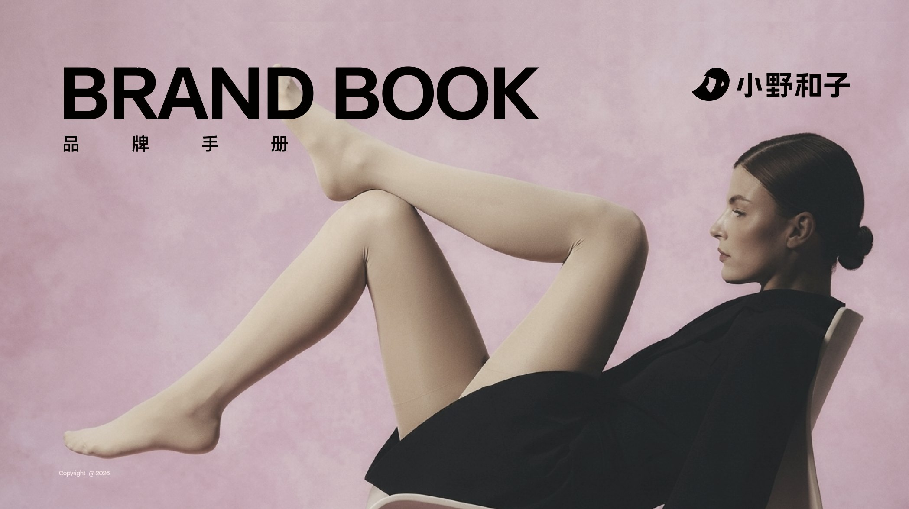
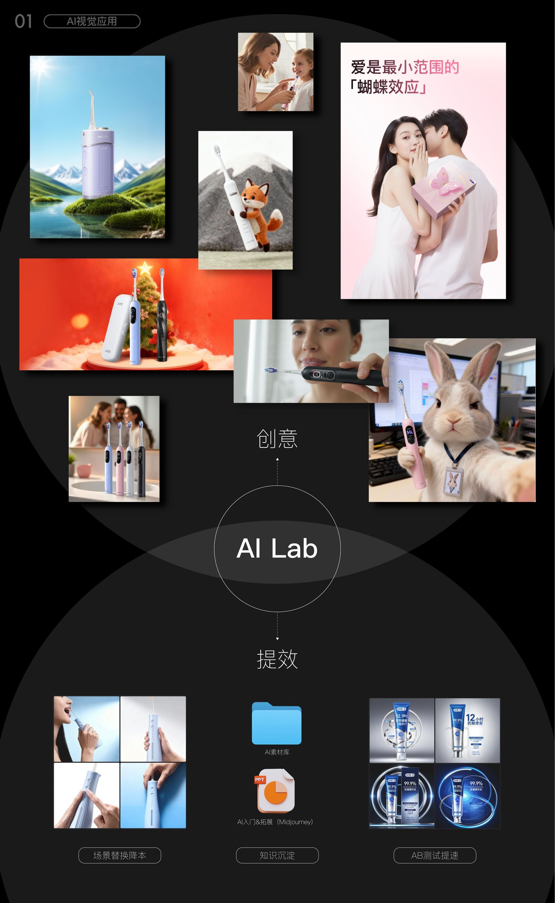

AI Visual Workflow
Bringing AI into the studio on two tracks: a creative lab for concept exploration, and an asset library that cuts the cost of everyday production. 把 AI 引入设计团队分两条线：一条是创意（AI Lab），用于概念探索与画面延展；另一条是提效（AI 素材库），用于可复用的日常工作。


Background
设计背景
AI entered the team along two lines. The creative line — AI Lab — handles concept exploration and image extension, so options that would previously have been too slow or too expensive to visualise can exist early.
The efficiency line — an AI asset library — handles reusable daily production. Concretely it lands in three things: onboarding and extension training in Midjourney, lowering the cost of scene replacement, and accumulating knowledge so A/B tests get faster.
把 AI 引入设计团队分两条线：一条是创意（AI Lab），用于概念探索与画面延展，让过去因为太慢或太贵而无法实现的方案能提前被看到。
另一条是提效（AI 素材库），用于可复用的日常工作。具体落在三件事上：Midjourney 的 AI 入门与拓展培训、场景替换降本，以及知识沉淀带来的 AB 测试提速。
Approach
设计思路
AI Lab · Midjourney in the studio — the decisions that set the direction. AI 视觉应用 —— 决定方向的几个选择。
-
01
Creative line: the AI Lab创意线：AI Lab
A lab for concept exploration and image extension — a space to make impossible options real enough to judge.
AI Lab 承担概念探索与画面延展，把原本不可能的方案先变成可以判断的东西。
-
02
Efficiency line: the asset library提效线：AI 素材库
The library lowers the cost of replacing scenes and turns individual experience into a searchable team asset.
搭建 AI 素材库，把场景替换的成本降下来，把个人经验沉淀成团队可检索的资产。
-
03
From onboarding to extension从入门到拓展
Midjourney was the entry point for training, and A/B testing speeds up the validation of what the team produced with it.
以 Midjourney 为切入点做入门与拓展培训，并用 AB 测试提速验证产出效果。
Outcome
成果展示



- Creative
- AI Lab — concept exploration and image extensionAI Lab —— 创意探索与画面延展
- Efficiency
- AI asset library — cheaper scene replacement, retained knowledge, faster A/B testsAI 素材库 —— 场景替换降本 · 知识沉淀 · AB 测试提速
- Tooling
- Midjourney onboarding and extension trainingMidjourney 入门 & 拓展培训
Next project / 下一个作品
WAY TOUCH · 循迹